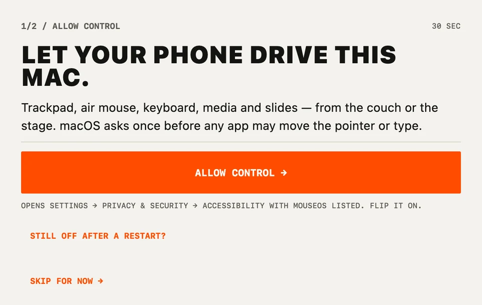
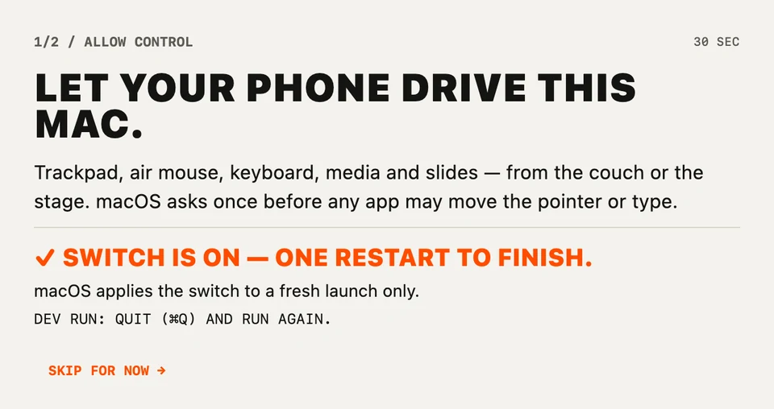
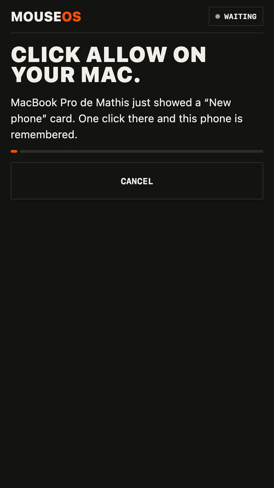
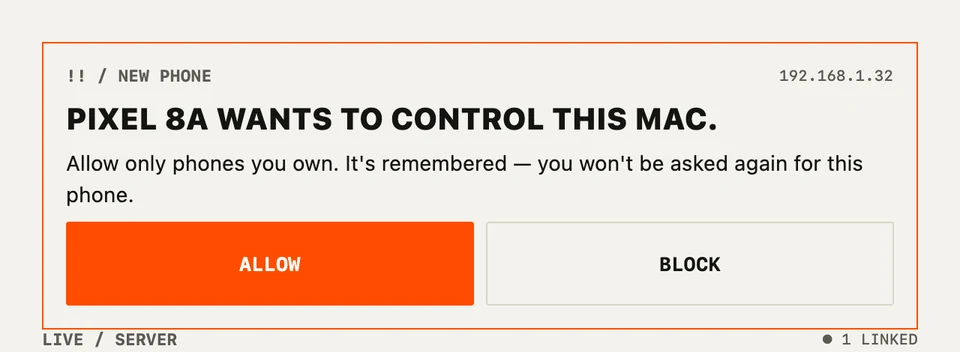

Trackpad
A Mac trackpad in your hand. Tap to click, two fingers to scroll with momentum, hold then move to drag. Slow for precision, fast to cross the screen.
Mac & TV remote · No account · No cloud
Trackpad, air mouse, keyboard, media remote and slide clicker for your Mac — plus the remote for your Samsung, LG or Google TV. Open it on both: they find each other on your Wi‑Fi.
Free · Mac with Apple silicon, macOS 11+ · Android 8+

Move your mouse over the grid —Drag on the grid — that's what your phone does to your Mac.
Install · about 2 minutes
01On your Mac
macOS says it can't check the app? Open System Settings → Privacy & Security, scroll down and click Open Anyway. Only the first time.

02On your Mac
Why? macOS lets an app move the pointer or type only after you say so, once. MouseOS uses it for exactly that.

03On your phone


That's it. Next time, just open the app — it's already linked.
Phone and Mac must be on the same Wi‑Fi, with VPN off and not on a guest network. Public, café and hotel networks hide devices from each other: turn on your phone's hotspot and join it from the Mac — it works anywhere. Last resort: tap ENTER ADDRESS MANUALLY on the phone and type the number the Mac shows.
Click Allow. If you said no earlier: System Settings → Privacy & Security → Local Network, turn MouseOS on.
MouseOS must be on in System Settings → Privacy & Security → Accessibility. The phone tells you when the Mac blocks control, and clears by itself once it's fixed.
Six screens
A Mac trackpad in your hand. Tap to click, two fingers to scroll with momentum, hold then move to drag. Slow for precision, fast to cross the screen.
Aim the phone like a TV remote. The gyroscope moves the pointer — flat or upright, any grip. Hold to point, tap to click.
D-pad and OK for Netflix, YouTube and Plex, the Mac's real volume, NEXT EPISODE, and one-tap launchers you can edit.
Your TV's own remote — no Mac needed. Samsung, LG and Google TV (Sony, TCL, Philips…). Pair once, it remembers.
Type on the phone, it lands on the Mac in any keyboard layout — accents and emoji included. Arrows and shortcuts one tap away.
Knows Keynote, PowerPoint and Google Slides. A talk timer that buzzes at 5 min, 1 min and time. Giant PREV / NEXT — and the volume buttons click too.
Your phone talks straight to your Mac or TV. No account to create, no server in between, nothing tracked.
Yes — the phone app and the Mac companion.
Macs with Apple silicon (M1 and later) on macOS 11 Big Sur or later.
Android first. iPhone is on the way; Windows isn't planned.
Samsung (Tizen), LG (webOS) and Google TV / Android TV — Sony, TCL, Philips and more. The TV tab works even without a Mac.
Anywhere the phone and the Mac share a network — including your phone's own hotspot, which is the fix for café and hotel Wi‑Fi.
No. Every new phone needs one ALLOW click on the Mac, and you can block or forget any phone from the menu bar.